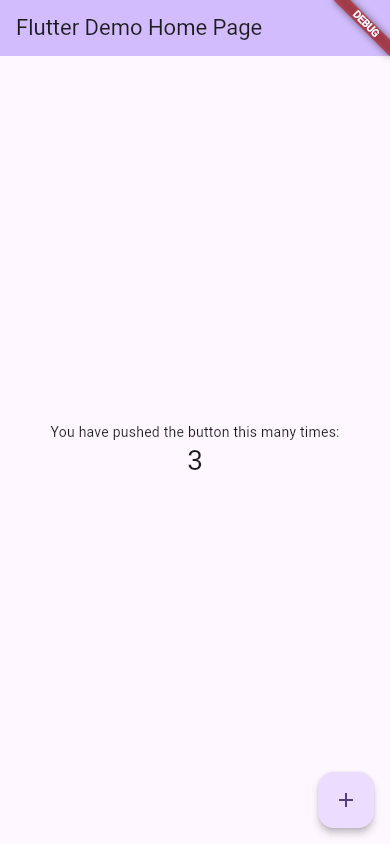
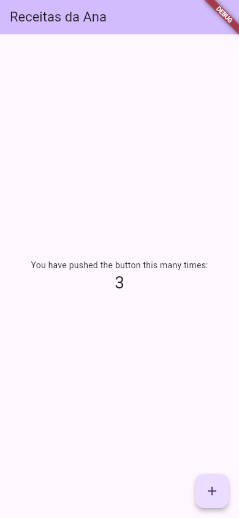
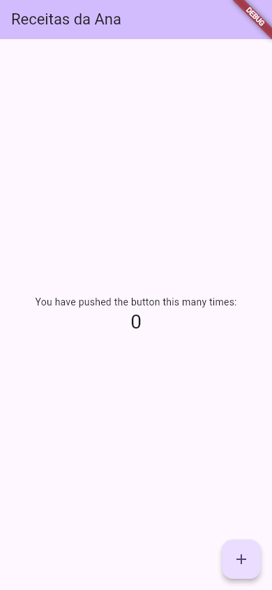
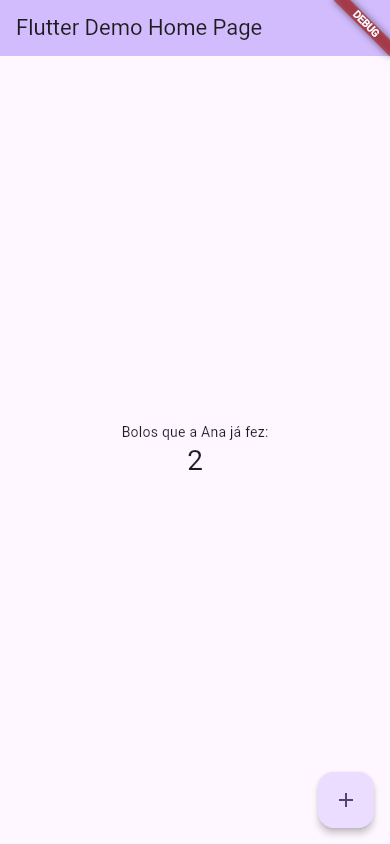

Hot Reload e Hot Restart
Em muitas ferramentas, cada mudança no código pede o mesmo ritual: salvar, compilar tudo de novo, esperar, abrir o app, navegar até a tela que você estava mexendo, repetir o que tinha feito. No Flutter, você salva e, em menos de um segundo, a mudança aparece no app que já estava aberto, no mesmo lugar, com os mesmos dados. Isso é o hot reload ("recarga a quente"), e é o recurso que faz muita gente se apaixonar pelo Flutter.
- O que é o hot reload e o que é o estado que ele preserva.
- O que é o hot restart e quando ele é necessário.
- A diferença entre os dois e a reinicialização completa.
- Como disparar cada um: r e R no terminal, salvar e os botões do editor.
- Os casos em que o hot reload "não funciona", e por quê.
As saídas de terminal desta aula saíram da máquina da Ana (Flutter 3.47.7), com o app rodando no aparelho web-server (aula Rodando o App). As telas foram fotografadas do mesmo app, no navegador.
A ideia: trocar a roupa do boneco
Pense num boneco de montar vestido de pirata, segurando uma espada. Você quer trocar o chapéu. Tem dois jeitos:
- Trocar só o chapéu: tira um, põe o outro. O boneco continua na mesma pose, segurando a espada. Esse é o hot reload.
- Desmontar e montar de novo, já com o chapéu novo: o boneco volta à pose inicial, de mãos vazias. Esse é o hot restart.
No app, a "pose" é o estado (em inglês, state): tudo o que o app guardou enquanto você usava. O número do contador, o texto digitado num campo, a tela em que você está, a posição da lista rolada.
| Hot reload (r) | Hot restart (R) | Reinício completo | |
|---|---|---|---|
| Como | r ou salvar o arquivo | R ou a seta circular | Parar (q) e flutter run de novo |
| Código novo | Sim | Sim | Sim |
| Estado | Mantido | Perdido (volta ao começo) | Perdido |
Roda o main de novo | Não | Sim | Sim |
| Recompila tudo | Não | Não | Sim |
| Tempo | Menos de 1 segundo | Alguns segundos | O tempo do flutter run |
| Quando usar | Quase sempre: textos, cores, layout | Quando o hot reload não mostra a mudança | Mudou código nativo, pacotes ou o pubspec.yaml |
1. Hot reload na prática
A Ana abriu o contador do flutter create e tocou três vezes no +:

Com o app aberto, ela mudou uma linha do lib/main.dart, o título da tela:
home: const MyHomePage(title: 'Receitas da Ana'),
e apertou r no terminal do flutter run. O resultado: o título novo aparece, e o contador continua em 3.

Repare: o Flutter não começou o app de novo. Ele trocou o código das funções e chamou o build de novo, por isso o título mudou; mas o _counter, guardado no estado da tela, continuou com o valor que tinha.
Cada foto do laboratório abre o app do zero. Por isso a foto "depois" foi tirada com o código novo e três toques no +, reproduzindo a tela que o hot reload produz. O comportamento (estado mantido no reload, perdido no restart) é o descrito na documentação oficial do Flutter (docs.flutter.dev/tools/hot-reload).
No terminal
Assim ficou o terminal da Ana ao apertar r, depois R e por fim q:
$ flutter run -d web-server --web-port 8080 Launching lib/main.dart on Web Server in debug mode... Waiting for connection from debug service on Web Server... 24,0s lib/main.dart is being served at http://localhost:8080 « ... o aviso da extensão do Chrome e a lista de teclas Performing hot reload... 66ms Recompile complete. No client connected. Performing hot restart... 24ms Recompile complete. No client connected. Application finished.
- Performing hot reload... 66ms
- "Fazendo o hot reload": o Flutter recompilou só o que mudou, em 66 milésimos de segundo.
- Recompile complete. No client connected.
- "Recompilação completa. Nenhum cliente conectado." Nesta rodada, nenhum navegador estava com o app aberto (o
web-serversó serve o app; quem abre é você), então não havia app para receber o código novo. Com o app aberto num emulador, celular ou no Chrome, o terminal informa no lugar dessa frase quantas bibliotecas foram recarregadas e em quanto tempo. - Performing hot restart... 24ms
- "Fazendo o hot restart".
- Application finished.
- "Aplicativo encerrado": a tecla q.
No editor
No VS Code e no Android Studio, o hot reload acontece sozinho ao salvar (Ctrl+S), com o app rodando pelo editor. Também há o botão do raio na barra de depuração (aula VS Code e Android Studio).
2. Hot restart
Com o mesmo código novo, um R (maiúsculo) recomeça o app: o título novo continua, mas o contador volta a 0, porque o estado foi jogado fora e o main rodou de novo.

O hot restart ainda é bem mais rápido que parar e rodar de novo, porque não recompila o app inteiro nem reinstala no aparelho.
3. Experimente
No editor do guia, cada clique em Rodar compila e abre o app do começo, como um reinício. A missão é a mesma mudança que você faria com o hot reload num app de verdade:
Missão: troque a frase 'You have pushed the button this many times:' por 'Bolos que a Ana já fez:'. Rode e toque no + algumas vezes.
import 'package:flutter/material.dart';
void main() {
runApp(const MyApp());
}
class MyApp extends StatelessWidget {
const MyApp({super.key});
@override
Widget build(BuildContext context) {
return MaterialApp(
title: 'Flutter Demo',
theme: ThemeData(
colorScheme: .fromSeed(seedColor: Colors.deepPurple),
),
home: const MyHomePage(title: 'Flutter Demo Home Page'),
);
}
}
class MyHomePage extends StatefulWidget {
const MyHomePage({super.key, required this.title});
final String title;
@override
State<MyHomePage> createState() => _MyHomePageState();
}
class _MyHomePageState extends State<MyHomePage> {
int _counter = 0;
void _incrementCounter() {
setState(() {
_counter++;
});
}
@override
Widget build(BuildContext context) {
return Scaffold(
appBar: AppBar(
backgroundColor: Theme.of(context).colorScheme.inversePrimary,
title: Text(widget.title),
),
body: Center(
child: Column(
mainAxisAlignment: .center,
children: [
const Text('You have pushed the button this many times:'),
Text(
'$_counter',
style: Theme.of(context).textTheme.headlineMedium,
),
],
),
),
floatingActionButton: FloatingActionButton(
onPressed: _incrementCounter,
tooltip: 'Increment',
child: const Icon(Icons.add),
),
);
}
}
import 'package:flutter/material.dart';
void main() {
runApp(const MyApp());
}
class MyApp extends StatelessWidget {
const MyApp({super.key});
@override
Widget build(BuildContext context) {
return MaterialApp(
title: 'Flutter Demo',
theme: ThemeData(
colorScheme: .fromSeed(seedColor: Colors.deepPurple),
),
home: const MyHomePage(title: 'Flutter Demo Home Page'),
);
}
}
class MyHomePage extends StatefulWidget {
const MyHomePage({super.key, required this.title});
final String title;
@override
State<MyHomePage> createState() => _MyHomePageState();
}
class _MyHomePageState extends State<MyHomePage> {
int _counter = 0;
void _incrementCounter() {
setState(() {
_counter++;
});
}
@override
Widget build(BuildContext context) {
return Scaffold(
appBar: AppBar(
backgroundColor: Theme.of(context).colorScheme.inversePrimary,
title: Text(widget.title),
),
body: Center(
child: Column(
mainAxisAlignment: .center,
children: [
const Text('Bolos que a Ana já fez:'),
Text(
'$_counter',
style: Theme.of(context).textTheme.headlineMedium,
),
],
),
),
floatingActionButton: FloatingActionButton(
onPressed: _incrementCounter,
tooltip: 'Increment',
child: const Icon(Icons.add),
),
);
}
}

Quando dá errado: o hot reload "não funcionou"
Às vezes você aperta r, o terminal diz que deu certo, e a tela não muda. Quase sempre é um destes casos, todos descritos na documentação oficial (ilustrativos: o laboratório não tem um aparelho conectado para recarregar):
main() ou no initState()
O hot reload troca o código e chama os build de novo, mas não roda o main de novo, nem o initState (o método que prepara o estado de uma tela, aula Ciclo de Vida do Widget). Mudou o runApp(...)? O app não vai ver. Regra prática da documentação: se o código mudado roda quando a árvore de widgets é reconstruída (dentro de um build), o hot reload mostra; se não roda, não mostra. Como consertar: R.
static
final saudacao = 'Bom dia'; // mudou para 'Boa tarde'
Variáveis globais e campos static contam como estado: o hot reload não roda de novo o valor inicial delas. A tela continua com o valor antigo. Como consertar: R. Se for uma constante, declare com const no lugar de final: mudanças em const sempre aparecem no hot reload.
A Ana mudou o valor inicial do contador de int _counter = 0; para int _counter = 10;, apertou r, e o número continuou o mesmo. Faz sentido: o hot reload preserva o estado, e o _counter já existia com o valor antigo; o valor inicial só é usado quando a tela é criada. Como consertar: R, que cria a tela do zero.
Se o código salvo tem um erro, o hot reload é recusado: o terminal mostra a mensagem com o arquivo, a linha e a coluna, e o app continua rodando com o código anterior. Como consertar: corrija o erro e aperte r de novo; não precisa reiniciar.
pubspec.yaml, um pacote ou código nativo
Pacote novo, imagem nova nos assets, ou código em Kotlin, Java ou Swift (nas pastas android/ e ios/): nada disso entra com o hot reload nem com o hot restart. Como consertar: pare o app (q) e rode flutter run de novo.
Hot reload e hot restart existem só no modo debug. Com flutter run --release, as teclas não estão disponíveis (aula Rodando o App).
Referência rápida
| Situação | Use |
|---|---|
Mudou textos, cores, tamanhos, widgets dentro de um build | Hot reload: r ou salvar |
Mudou o main, o initState, valores iniciais, variáveis globais | Hot restart: R |
| Quer o app "zerado" para testar desde o começo | Hot restart: R |
Mudou o pubspec.yaml, pacotes, assets ou código nativo | Parar (q) e flutter run |
| Erro de compilação | Corrigir e r de novo |
Exercícios
1. A tecla do hot reload
No terminal do flutter run, qual tecla faz o hot reload?
2. A tecla do hot restart
E qual faz o hot restart?
3. O contador está em 5. A Ana muda a cor do botão e faz hot reload. Qual número aparece?
4. A Ana mudou o texto dentro do runApp(...) no main e fez hot reload. Nada mudou. O que fazer?
5. A Ana acrescentou um pacote novo no pubspec.yaml. O que ela precisa fazer para o app usá-lo?
Resumo
- Hot reload (r ou salvar): aplica o código novo em menos de um segundo e mantém o estado (o contador, a tela, o texto digitado).
- Hot restart (R): recomeça o app com o código novo e perde o estado; roda o
mainde novo. - Reinício completo (q e
flutter run): para mudanças nopubspec.yaml, em pacotes, assets e código nativo. - O hot reload só mostra o que é refeito no
build. Mudanças nomain, noinitState, em valores iniciais e em variáveis globais pedem hot restart. - Com erro de compilação, o hot reload é recusado e o app continua com o código antigo: corrija e recarregue.
- Só funciona no modo debug.